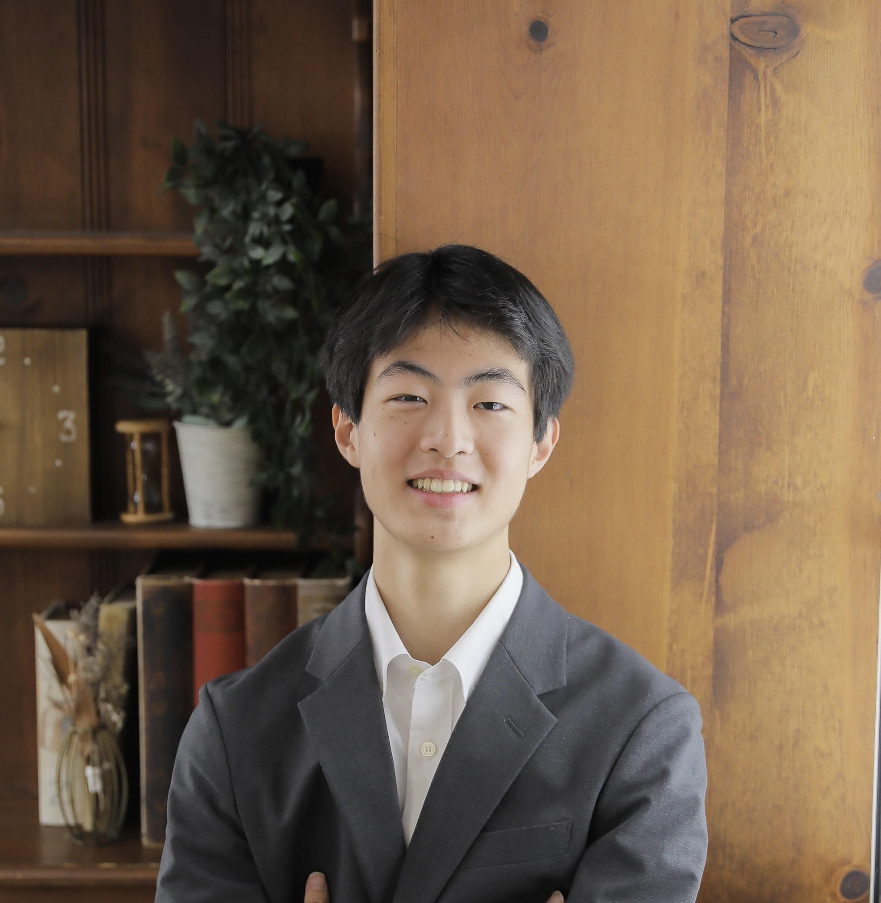

01
ビジョン
私の研究の旅は、テニス部での経験から始まりました。競技テニスを続ける中で、チームメイトや友人、そして自分自身が防ぐことができたはずの怪我に苦しむ姿を目の当たりにしました。
この経験が、私に行動を促しました。AIと最新技術を活用し、怪我をより早期に検知・予防するための研究に取り組み始めたのです。無マーカーモーションキャプチャシステムの誤差がスポーツ傷害予防指標に与える影響をモンテカルロシミュレーションで分析するなど、研究は着実に前進しています。
私の学術的な関心の中心は電気工学と人工知能です。これらの技術を効率的に組み合わせ、身の回りの問題を解決し、コミュニティに貢献することを目指しています。
そして、優れた研究やアイデアを実際に人々のもとへ届けるには起業家精神が不可欠だと信じています。研究室での発見を社会実装につなげることが、私の根本的な使命です。
現在の状況
高校2年生
広尾学園高等学校（東京）在学中
注力分野
電気工学 · 人工知能
目標
創業者兼研究者
フォト

プロフィール

フォト

フォト

フォト